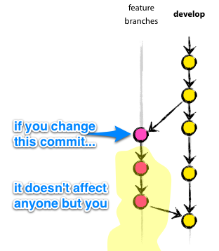
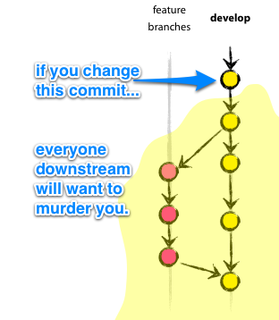

Vitaly Kondratiev
May 2014
@vitkon
* The best branching model I've seen so far. http://nvie.com/posts/a-successful-git-branching-model/
If you are working on your local branch for a long period of time, it's worth keeping in sync with a remote develop branch.
$ git checkout -b feature/feature-id
# ninja stuff happens in between
$ git pull origin develop
$ git rebase develop
Create a Pull Request to develop branch when feature has been completed. Add a short summarising description.
# Feature requirements (in a nutshell)
# Implemetation comments (if needed)
When selecting reviewers, put senior peers for quality assistance
and junior peers for knowledge share.
Viewing separate commits can significantly help tech QA
if you’re going to go rebase route, you should realise the consequences of your actions.
 
Access to develop and master branches in Bitbucket can be limited to a certain group of users (Release admins).
It helps to enforce the Pull Request process and protects the build from a potential breakage.
commits that you have pushed to a public repository